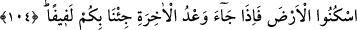

MÛSÂ’YA VERİLEN
DOKUZ MÛCİZE
101. Andolsun biz, Mûsâ’ya apaçık dokuz âyet verdik. Haydi İsrailoğulları’na sor.
Mûsâ onlara geldiğinde Firavun ona, “Ey Mûsâ! Senin büyülenmiş olduğunu
sanıyorum!” dedi.
102. (Mûsâ Firavun’a:) “Pek âlâ biliyorsun ki bunları birer ibret olmak üzere,
ancak göklerin ve yerin Rabbi indirdi. Ey Firavun! Ben de senin hakikaten
mahvolduğunu sanıyorum!” dedi.
103. Derken, Firavun onları ülkeden çıkarmak istedi. Bu yüzden biz onu ve
maiyyetindekilerin hepsini (denizde) boğduk.
104. Arkasından da İsrailoğulları’na: “O topraklarda oturun! Ahiret vaadi
tahakkuk edince, hepinizi toplayıp bir araya getireceğiz” dedik.
“Andolsun biz Mûsâ’ya” onun peygamberliğine, Allah katından getirdiği şeyin
doğruluğuna açıkça delâlet eden “apaçık dokuz âyet “ mûcize “verdik.” Bunlar asâ,
beyaz el, çekirge, haşere, kurbağalar, kan, tufan, kıtlık seneleri ve ürünlerin azalmasıdır.
Biz Mûsâ’ya dedik ki: “Ey Mûsâ! “Onlara geldiğinde” Firavun’dan
“İsrailoğulları’nı” yâni Yakub’un evladlarını “iste” ve ona: ‘İsrailoğulları’nı benimle
birlikte gönder” de.
“Sor” hitabı Peygamberimiz’e olduğunda âyetin mânâsı şöyle olur: “Haydi
İsrailoğulları’na sor. Mûsâ onlara geldiğinde Firavun ona, “Ey Mûsâ! Senin
büyülenmiş olduğunu sanıyorum!” dedi.”
Kâşifî şöyle der: “İmdi ey Muhammed, İsrâiloğulları’ndan, yâni onların âlimlerinden
bu âyetleri sor ki müşrikler üzerinde senin sözlerinin doğruluğunu zâhir etsinler.” Yâni
onlara haber verdiğine göre Mûsâ onlara geldiğinde onunla Firavun arasında ne geçtiği
konusunda seni sınadıklarında doğruluğun ortaya çıksın.
et-Te’vîlâtü’n-Necmiyye’de şöyle der: Mûsâ onlara bu âyetlerle geldiğinde onları